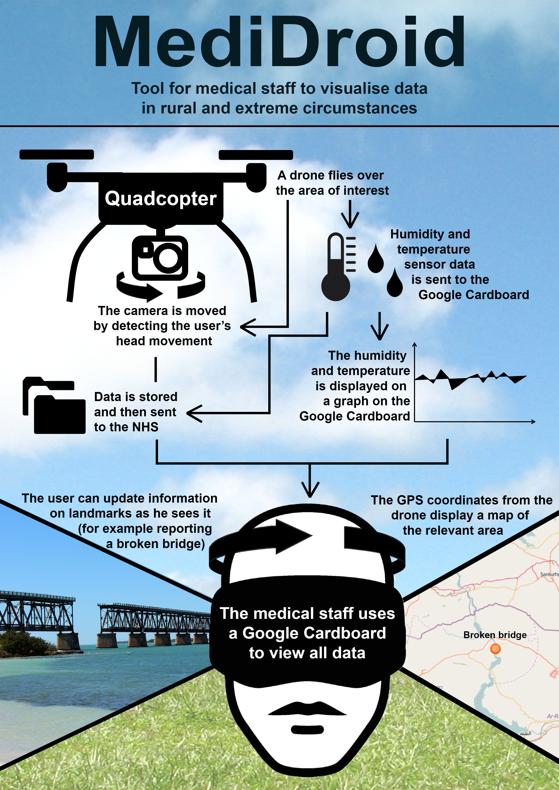

Google meets Medecins Sans Frontieres: An augmented reality experience for data collection on the field.
The Future of MediDroid
In the future, we hope several features can be added to the app to further enhance its utility and experience:
- Annotating markers: We would also like for the user of the Cardboard to have the ability to edit or add markers within the application. Currently, this can be done by noticing a change in a point of interest on the video, and after the flight editing or adding an entry to the database. But with the ability to do this directly from the Cardboard, it can provide exact coordinates and avoid additional steps.
- Computer vision: First, the video footage from the drone offers many possibilities in terms of computer vision. One of our ideas is to implement motion detection and tracking, which we tested in our different prototypes (see below). The Cardboard view is too narrow to render any more information in the form of a video or image, but the data collected can be analysed on the backend and displayed as a graph in the interface.
- Modular sensors and parts: The drone can be equipped with further sensors for different uses: attaching a thermal camera could be used to get an estimate of population; also, a gas sensor can be used to analyse pollution or gas leaks.

Digital Health Conference at UCL
The team displayed and presented a poster explaining the MediDroid system at The Festival for Digital Health, a conference run by the institute of digital health at UCL. The conference included talks, panel discussions, student’s posters and workshops on new and innovative technology in the health industry. We gave a 1-minute lightning talk about the project, encouraging conference visitors to visit our poster and to approach us with any questions. Each visitor voted on the best poster, and MediDroid came joint first in the competition.
Collaboration
A user manual to set up the hardware for the drones, sensors and connectivity, click here.
The source code for the application can be found on our GitHub account.
The list of hardware components for MediDroid can be accessed here.